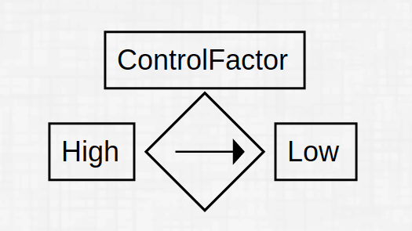

Drag and drop the elements from the components palatte to the canvas
Double click the element to rotate 90 degrees clockwise
Connection of ports:
Click the port on first element and click the port on second
element, it automatically connects (OR)
You can drag the first port to the second port of different
element(doesnt work on mobile browser)
Double click the element Label to edit the value
Once circuit is made, click on Generate Node No on
the toolbar to automatically generate the node values. You can then
use use this node numbering to set controlling sources high and low
values.
For controlling sources for example 
The top input box "ControlFactor" is the control factor of the
element
The input box in the left "High" represents the node high of the
controlling element whereas the input box in the right "Low"
represents the node low of the controlling element.
In case if current being the controlling variable, the high
corresponds to the node from which it flows, and low corresponds
to the node to which the current flows.
In case if voltage being the controlling variable, the high
corresponds to the node at which the postive is connected, the low
corresponds to the node at which the negative is connected.
To undo/redo/delete an element, simply click that element and use
options from the toolbar.
If there are controlling sources, then the values of High and Low are
changed to match with the automatic node numbering when you click
simulate.